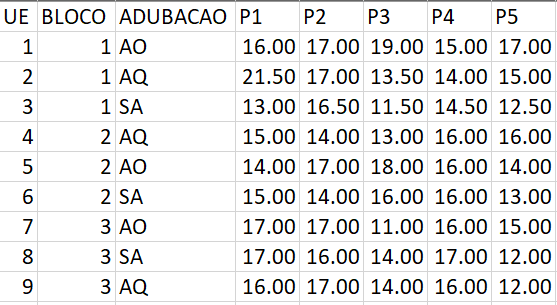
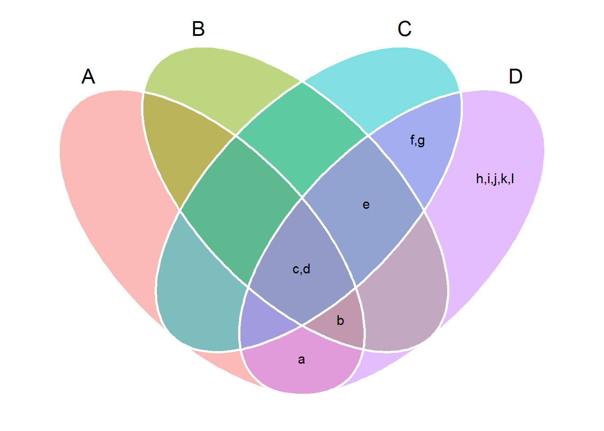

# meu computador (mudar de acordo)
setwd("E:/Desktop/UFSC/aulas/classes/RGV410046/data")4. Manipulação de Dados
Diretório
Pacotes
library(rio)
library(tidyverse)
library(metan)Girar
Geralmente, os dados são organizados para facilitar algum uso que não seja a análise. Por exemplo, os dados geralmente são organizados para facilitar ao máximo a coleta. Isso significa que, para a maioria das análises, os dados não estarão em um formato tidy e você precisará fazer algumas transformações morfológicas. O primeiro passo é sempre descobrir quais são as variáveis a serem transformadas. O segundo passo é resolver um dos dois problemas mais comuns:
- Uma variável pode estar espalhada por várias colunas.
- Uma observação pode estar espalhada por várias linhas.
Note o exemplo abaixo.

No caso acima, a altura de planta de plantas de feijão foi mensurada em cinco plantas de cada bloco de três diferentes tratamentos. Então, cada tratamento conterá 15 valores. Note que as medições de cada planta estão dispostas em cinco diferentes colunas (P1 a P5). Então, a variável altura de planta está espalhada por várias colunas. Para corrigir esse problema e o problema de uma observação estar espalhada por várias linhas, utilizaremos duas das mais importantes do pacote tidyr: pivot_longer() e pivot_wider().
Longer
(df_wide <- import("examples_data.xlsx", sheet = "feijao")) UE BLOCO ADUBACAO P1 P2 P3 P4 P5
1 1 1 AO 16.0 17.0 19.0 15.0 17.0
2 2 1 AQ 21.5 17.0 13.5 14.0 15.0
3 3 1 SA 13.0 16.5 11.5 14.5 12.5
4 4 2 AQ 15.0 14.0 13.0 16.0 16.0
5 5 2 AO 14.0 17.0 18.0 16.0 14.0
6 6 2 SA 15.0 14.0 16.0 16.0 13.0
7 7 3 AO 17.0 17.0 11.0 16.0 15.0
8 8 3 SA 17.0 16.0 14.0 17.0 12.0
9 9 3 AQ 16.0 17.0 14.0 16.0 12.0Para organizar um conjunto de dados como esse, precisamos dinamizar as colunas problemáticas em duas novas colunas (variável e valor) utilizando a função pivot_longer().
Para realizar essa operação, precisamos de três parâmetros (além do conjunto de dados)
cols: o conjunto de colunas cujos nomes são valores, não variáveis. Neste exemplo, essas são as colunas P1, P2, P3, P4 e P5.names_to: O nome da variável para a qual mover os nomes das colunas. Aqui será"PLANTA".values_to: O nome da variável para a qual mover os valores da coluna. Aqui será"ALTURA".
long <-
pivot_longer(df_wide,
cols = P1:P5,
names_to = "PLANTA",
values_to = "AP")
long# A tibble: 45 × 5
UE BLOCO ADUBACAO PLANTA AP
<dbl> <dbl> <chr> <chr> <dbl>
1 1 1 AO P1 16
2 1 1 AO P2 17
3 1 1 AO P3 19
4 1 1 AO P4 15
5 1 1 AO P5 17
6 2 1 AQ P1 21.5
7 2 1 AQ P2 17
8 2 1 AQ P3 13.5
9 2 1 AQ P4 14
10 2 1 AQ P5 15
# … with 35 more rows
tidyselect style notation
A seleção de variáveis no universo tidy é prioritariamente suportada pelo pacote tidyselect. Isso significa que a seleção de variáveis pode ser realizada com base em seus nomes, posições, ou propriedades.
# seleciona variáveis que contém uma determinada string
pivot_longer(df_wide,
cols = starts_with("P"),
names_to = "PLANTA",
values_to = "ALTURA") |>
print(n = 3)# A tibble: 45 × 5
UE BLOCO ADUBACAO PLANTA ALTURA
<dbl> <dbl> <chr> <chr> <dbl>
1 1 1 AO P1 16
2 1 1 AO P2 17
3 1 1 AO P3 19
# … with 42 more rows# seleciona variáveis por sua posição
pivot_longer(df_wide,
cols = 4:8,
names_to = "PLANTA",
values_to = "ALTURA") |>
print(n = 3)# A tibble: 45 × 5
UE BLOCO ADUBACAO PLANTA ALTURA
<dbl> <dbl> <chr> <chr> <dbl>
1 1 1 AO P1 16
2 1 1 AO P2 17
3 1 1 AO P3 19
# … with 42 more rowsApós a modificação, as colunas são descartadas e obtemos as colunas de planta e altura. Assim, vemos que pivot_longer() torna os conjuntos de dados mais longos aumentando o número de linhas e diminuindo o número de colunas.
Wider
Uma outra forma comum de dados que não seguem o formato tidy é quando observações estão espalhadas por várias linhas. Observe os dados abaixo.
(dflong <- import("examples_data.xlsx", sheet = "df2")) HIBRIDO BLOCO VARIAVEL VALOR
1 H1 I ALT_PLANT 3.002
2 H1 I ALT_ESP 1.878
3 H1 II ALT_PLANT 2.974
4 H1 II ALT_ESP 1.834
5 H1 III ALT_PLANT 2.814
6 H1 III ALT_ESP 1.674
7 H2 I ALT_PLANT 2.104
8 H2 I ALT_ESP 0.910
9 H2 II ALT_PLANT 2.120
10 H2 II ALT_ESP 1.034
11 H2 III ALT_PLANT 1.924
12 H2 III ALT_ESP 1.018
13 H3 I ALT_PLANT 2.132
14 H3 I ALT_ESP 1.052
15 H3 II ALT_PLANT 2.126
16 H3 II ALT_ESP 1.012
17 H3 III ALT_PLANT 2.182
18 H3 III ALT_ESP 0.992Neste caso, duas variáveis (ALT_PLANT e ALT_ESP) estão espalhadas pelas linhas. Para lidar com esse problema, utilizamos a função pivot_wider() que é o oposto de pivot_longer().
Para arrumarmos os dados em dflong utilizamos pivot_wider() de maneira similar à pivot_longer(). Desta vez, no entanto, precisamos apenas de dois parâmetros:
names_from: A coluna da qual obter nomes de variáveis. Aqui, é"VARIAVEL".values_from: A coluna da qual obter valores. Aqui é"VALOR".
wider <-
dflong |>
pivot_wider(names_from = VARIAVEL,
values_from = VALOR)
wider# A tibble: 9 × 4
HIBRIDO BLOCO ALT_PLANT ALT_ESP
<chr> <chr> <dbl> <dbl>
1 H1 I 3.00 1.88
2 H1 II 2.97 1.83
3 H1 III 2.81 1.67
4 H2 I 2.10 0.91
5 H2 II 2.12 1.03
6 H2 III 1.92 1.02
7 H3 I 2.13 1.05
8 H3 II 2.13 1.01
9 H3 III 2.18 0.992
Múltiplos nomes e/ou valores
Em alguns casos será necessário realizar a o mesmo processo anterior, mas utilizando múltiplas variáveis em names_from e/ou values_from. Aqui, também são mostrados alguns argumentos adicionais que permitem um bom nível de controle sobre como as variáveis são combinadas.
wider2 <-
dflong |>
pivot_wider(names_from = c(VARIAVEL, BLOCO),
values_from = VALOR,
names_sep = ".")
wider2# A tibble: 3 × 7
HIBRIDO ALT_PLANT.I ALT_ESP.I ALT_PLANT.II ALT_ESP.II ALT_PLANT.III ALT_ESP.…¹
<chr> <dbl> <dbl> <dbl> <dbl> <dbl> <dbl>
1 H1 3.00 1.88 2.97 1.83 2.81 1.67
2 H2 2.10 0.91 2.12 1.03 1.92 1.02
3 H3 2.13 1.05 2.13 1.01 2.18 0.992
# … with abbreviated variable name ¹ALT_ESP.IIISeparar
Até agora você aprendeu como realizar operações morfológicas para transformar dados em de formato wide para long e vice-versa. O seguinte conjunto de dados tem um problema diferente:
(ex_separate <- import("examples_data.xlsx", sheet = "df5")) HIBRIDO BLOCO ALT_PLANT ALT_ESP RELACAO
1 H1 I 3.002 1.878 1.878 / 3.002
2 H1 II 2.974 1.834 1.834 / 2.974
3 H1 III 2.814 1.674 1.674 / 2.814
4 H2 I 2.104 0.910 0.91 / 2.104
5 H2 II 2.120 1.034 1.034 / 2.12
6 H2 III 1.924 1.018 1.018 / 1.924
7 H3 I 2.132 1.052 1.052 / 2.132
8 H3 II 2.126 1.012 1.012 / 2.126
9 H3 III 2.182 0.992 0.992 / 2.182Observe que a coluna temos uma coluna (RELACAO) contém duas variáveis (ALT_ESP e ALT_PLANT). Para corrigir esse problema, precisaremos da função separate().
Por padrão, separate() dividirá valores onde quer que veja um caractere não alfanumérico. Você também pode explicitar um separador para as colunas. Note o que acontece abaixo.
# por padrão, separa no primeiro caractere alfanumérico (.)
ex_separate |>
separate(RELACAO, into = c("AESP", "APLA"))Warning: Expected 2 pieces. Additional pieces discarded in 9 rows [1, 2, 3, 4,
5, 6, 7, 8, 9]. HIBRIDO BLOCO ALT_PLANT ALT_ESP AESP APLA
1 H1 I 3.002 1.878 1 878
2 H1 II 2.974 1.834 1 834
3 H1 III 2.814 1.674 1 674
4 H2 I 2.104 0.910 0 91
5 H2 II 2.120 1.034 1 034
6 H2 III 1.924 1.018 1 018
7 H3 I 2.132 1.052 1 052
8 H3 II 2.126 1.012 1 012
9 H3 III 2.182 0.992 0 992# explicita para separar no /
ex_separate2 <-
ex_separate |>
separate(RELACAO, into = c("AESP", "APLA"), sep = "/")
Desafio
Considerando o conjunto de dados wider2, combine o que você aprendeu até agora com pivot_longer() e separate() para retornar o conjunto de dados dflong.
Concatenar
Quem trabalha com excel muito provavelmente já utilizou a função =CONCAT, que concatena valores de múltiplas colunas em uma única coluna. Aqui, a função unite(), pode ser utilizada para este fim. Ela é o inverso da separate().
Vamos considerar que queiramos unir as colunas HIBRIDO e BLOCO do conjunto dflong em uma única coluna, chamada NÍVEL. Esta união é dada por
dflong |>
unite(HIBRIDO, BLOCO, col = "NIVEL") |>
separate(NIVEL, into = c("HIBRIDO", "BLOCO")) |>
head() HIBRIDO BLOCO VARIAVEL VALOR
1 H1 I ALT_PLANT 3.002
2 H1 I ALT_ESP 1.878
3 H1 II ALT_PLANT 2.974
4 H1 II ALT_ESP 1.834
5 H1 III ALT_PLANT 2.814
6 H1 III ALT_ESP 1.674dflong |>
unite("NIVEL", HIBRIDO:BLOCO) |>
head() NIVEL VARIAVEL VALOR
1 H1_I ALT_PLANT 3.002
2 H1_I ALT_ESP 1.878
3 H1_II ALT_PLANT 2.974
4 H1_II ALT_ESP 1.834
5 H1_III ALT_PLANT 2.814
6 H1_III ALT_ESP 1.674#
dflong |>
unite(HIBRIDO, BLOCO,
col = "NIVEL",
sep = ".",
remove = FALSE) |>
head() NIVEL HIBRIDO BLOCO VARIAVEL VALOR
1 H1.I H1 I ALT_PLANT 3.002
2 H1.I H1 I ALT_ESP 1.878
3 H1.II H1 II ALT_PLANT 2.974
4 H1.II H1 II ALT_ESP 1.834
5 H1.III H1 III ALT_PLANT 2.814
6 H1.III H1 III ALT_ESP 1.674Renomear
Algumas vezes necessitamos renomear as variáveis em nosso conjunto de dados. Seria trabalhoso mudar o nome da coluna nos dados externos e importa-los novamente. Vamos considerar os dados em long e renomear a coluna UE > PARCELA e BLOCO > REP. Aqui, algumas alternativas são apresentadas.
R base
long1 <- long
names(long1)[c(1, 2)] <- c("PARCELA", "REP")
names(long1)[1] "PARCELA" "REP" "ADUBACAO" "PLANTA" "AP" dplyr rename()
A função rename() do pacote dplyr altera os nomes de variáveis individuais usando a sintaxe nome_novo = nome_antigo.
rename(long,
PARCELA = UE,
REP = BLOCO) |>
names()[1] "PARCELA" "REP" "ADUBACAO" "PLANTA" "AP" dplyr rename_with()
Uma outra alternativa é rename_with(), que renomeia colunas usando uma função.
rename_with(long, tolower) |> names()[1] "ue" "bloco" "adubacao" "planta" "ap" metan add_prefix() e add_suffix()
Prefixos e sufixos são extremamente úteis na manipulação de dados, pois permitem que select helpers possam ser utilizados na seleção de variáveis, que será visto no próximo tópico. Aqui, vamos ver como prefixos e sufixos podem ser adicionados à nomes das variáveis.
long |>
add_prefix(UE:PLANTA, prefix = "Fct") |>
names()[1] "Fct_UE" "Fct_BLOCO" "Fct_ADUBACAO" "Fct_PLANTA" "AP" # utilizando select helper
long |>
add_suffix(starts_with("A"), suffix = "a") |>
select(contains("_a")) |>
names()[1] "ADUBACAO_a" "AP_a" Juntar
É raro que uma análise de dados envolva apenas uma única tabela de dados. Na prática, diversas tabela podem existir e ferramentas flexíveis para combiná-las são necessárias. No dplyr, existem uma família de funções do tipo *_join(x, y) que podem ser utilizadas para unir colunas de y a x, combinando linhas com base nas chaves:
Junções com mutação
left_join(): inclui todas as linhas emx.right_join(): inclui todas as linhas emy.inner_join(): inclui todas as linhas emxey.full_join(): inclui todas as linhas emxouy.
Se uma linha em x corresponder a várias linhas em y, todas as linhas em y serão retornadas uma vez para cada linha correspondente em x.
Vamos à um exemplo prático!
df1 <- import("examples_data.xlsx", sheet = "df1")
# computar a média para cada híbrido
# renomear as variáveis
df2 <-
mean_by(df1, HIBRIDO) |>
rename(AP_M = ALT_PLANT, AE_M = ALT_ESP)
# remove alguns níveis para mostrar as diferenças nas funções
df1 <- df1 |> filter(HIBRIDO != "H2")
df2 <- df2 |> filter(HIBRIDO != "H3")
df1 HIBRIDO BLOCO ALT_PLANT ALT_ESP
1 H1 I 3.002 1.878
2 H1 II 2.974 1.834
3 H1 III 2.814 1.674
4 H3 I 2.132 1.052
5 H3 II 2.126 1.012
6 H3 III 2.182 0.992df2# A tibble: 2 × 3
HIBRIDO AP_M AE_M
<chr> <dbl> <dbl>
1 H1 2.93 1.80
2 H2 2.05 0.987# todas as linhas de df1
df1 |> left_join(df2)Joining, by = "HIBRIDO" HIBRIDO BLOCO ALT_PLANT ALT_ESP AP_M AE_M
1 H1 I 3.002 1.878 2.93 1.795333
2 H1 II 2.974 1.834 2.93 1.795333
3 H1 III 2.814 1.674 2.93 1.795333
4 H3 I 2.132 1.052 NA NA
5 H3 II 2.126 1.012 NA NA
6 H3 III 2.182 0.992 NA NA# todas as linhas de df2
# suprima a mensagem informando por qual coluna(s) juntar
df1 |> right_join(df2, by = "HIBRIDO") HIBRIDO BLOCO ALT_PLANT ALT_ESP AP_M AE_M
1 H1 I 3.002 1.878 2.930000 1.7953333
2 H1 II 2.974 1.834 2.930000 1.7953333
3 H1 III 2.814 1.674 2.930000 1.7953333
4 H2 <NA> NA NA 2.049333 0.9873333# todas as linhas de df1 e df2
df1 |> inner_join(df2)Joining, by = "HIBRIDO" HIBRIDO BLOCO ALT_PLANT ALT_ESP AP_M AE_M
1 H1 I 3.002 1.878 2.93 1.795333
2 H1 II 2.974 1.834 2.93 1.795333
3 H1 III 2.814 1.674 2.93 1.795333# todas as linhas de df1 ou df2
df1 |> full_join(df2, keep = TRUE)Joining, by = "HIBRIDO" HIBRIDO.x BLOCO ALT_PLANT ALT_ESP HIBRIDO.y AP_M AE_M
1 H1 I 3.002 1.878 H1 2.930000 1.7953333
2 H1 II 2.974 1.834 H1 2.930000 1.7953333
3 H1 III 2.814 1.674 H1 2.930000 1.7953333
4 H3 I 2.132 1.052 <NA> NA NA
5 H3 II 2.126 1.012 <NA> NA NA
6 H3 III 2.182 0.992 <NA> NA NA
7 <NA> <NA> NA NA H2 2.049333 0.9873333Junções com filtragem
As duas seguintes funções de filtragem filtram linhas de x com base na presença ou ausência de correspondências em y:
semi_join()retorna todas as linhas dexcom uma correspondência emy.anti_join()retorna todas as linhas dexsem uma correspondência emy.
# linhas de df1 que estão em df2
df1 |> semi_join(df2)Joining, by = "HIBRIDO" HIBRIDO BLOCO ALT_PLANT ALT_ESP
1 H1 I 3.002 1.878
2 H1 II 2.974 1.834
3 H1 III 2.814 1.674# linhas de df1 que NÃO estão em df2
df1 |> anti_join(df2)Joining, by = "HIBRIDO" HIBRIDO BLOCO ALT_PLANT ALT_ESP
1 H3 I 2.132 1.052
2 H3 II 2.126 1.012
3 H3 III 2.182 0.992Operações com conjuntos (vetores)
Operações com conjuntos são importantes na análise de dados. Por exemplo, se um determinado genótipo foi selecionado nos ambientes A, B e C, então, este determinado genótipo é a interseção dos ambientes A, B e C. Tanto o R-base quanto o pacote dplyr fornecem funções para operações com conjuntos, mas funcionam com dois conjuntos de uma vez apenas.
(A <- letters[1:4])[1] "a" "b" "c" "d"(B <- letters[2:5])[1] "b" "c" "d" "e"(C <- letters[3:7])[1] "c" "d" "e" "f" "g"(D <- letters[1:12]) [1] "a" "b" "c" "d" "e" "f" "g" "h" "i" "j" "k" "l"set_lits <- list(A = A, B = B, C = C, D = D)
# intersecção de A, B (dplyr)
intersect(A, B)[1] "b" "c" "d"# intersecção de A, B e C (dplyr)
intersect(intersect(A, B), C)[1] "c" "d"Observe que para computar interseções/uniões/diferenças com mais de dois conjuntos precisamos chamar (ex., intersect()) várias vezes O pacote metan fornece um grupo de funções set_*() que supera esse problema
# Intersecção de A e B
set_intersect(A, B)[1] "b" "c" "d"# Intersecção de A, B e C
set_intersect(A, B, C)[1] "c" "d"# União de todos os conjuntos
# Todas as funções entendem um objeto de classe lista
set_union(set_lits) [1] "a" "b" "c" "d" "e" "f" "g" "h" "i" "j" "k" "l"# Intersecção de todos os conjuntos
set_intersect(set_lits)[1] "c" "d"
Diagrama de Venn
Um diagrama de Venn é um estilo de diagrama amplamente utilizado que mostra a relação lógica entre conjuntos usando curvas fechadas simples desenhadas em um plano para representar conjuntos. Muitas vezes, essas curvas são círculos ou elipses. Para mostrar as relações entre os conjuntos A, B, C e D, usamos a função venn_plot() do pacote metan.
venn_plot(set_lits, show_elements = TRUE)
Operações com conjuntos (data frames)
Nesta seção será demonstrado como é possivel utilizar operações de cojuntos como interseção e união. É esperado que as entradas x e y tenham as mesmas variáveis. Para isto, vamos criar dois novos conjuntos de dados fictícios.
dfi1 <- data.frame(gen = c("A", "B", "C"),
y = c(2, 3, 1))
dfi2 <- data.frame(gen = c("B", "C", "D"),
y = c(3, 1, 4))
set_intersect(dfi1, dfi2) gen y
1 B 3
2 C 1set_difference(dfi1, dfi2) gen y
1 A 2set_union(dfi1, dfi2) gen y
1 A 2
2 B 3
3 C 1
4 D 4